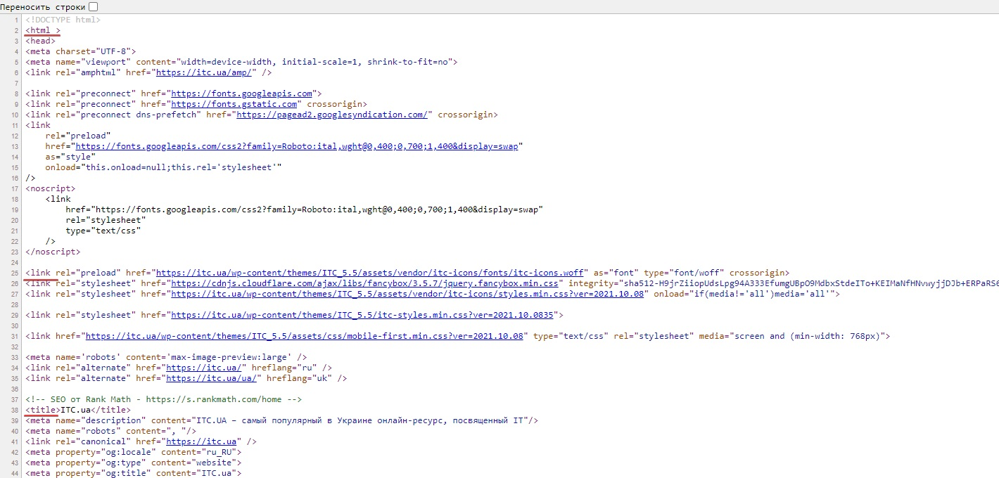
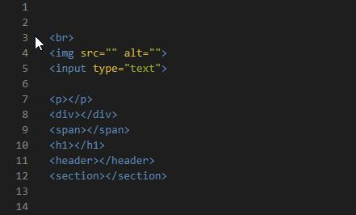
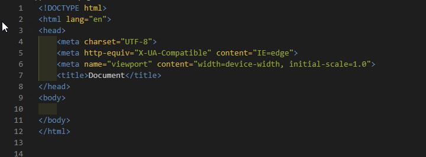
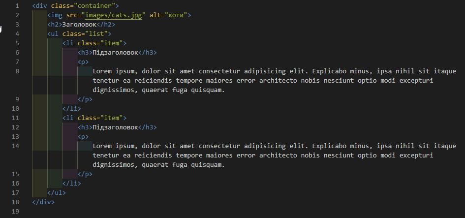
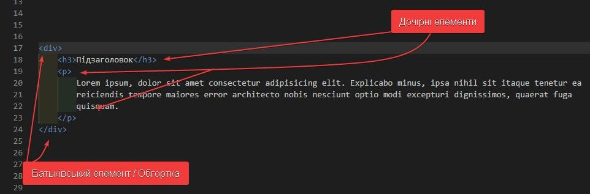

HTML для початківців (частина 1)
Цей матеріал є стартовим. В ньому ми дізнаємося, що базово необхідно знати для того, щоб почати верстати сайти. Ми розглянемо найпростіші правила коду HTML, та як він пов’язаний із тим, що ми бачимо в браузері. Стаття про HTML для початківців стане основою, на якій ми побудуємо подальші знання. Весь матеріал я буду викладати максимально простою мовою. Для ліпшого розуміння рекомендую вивчати основи HTML за відео.
Що ми бачимо, коли дивимося на сайт
Коли ми хочемо позначити будь-що на сторінці – ми називатимемо це елементом. Наприклад, картинка, параграф тексту, заголовок, посилання, список, кнопка. Все це якісь конкретні елементи.
- Елемент в HTML
- Tекст, зображення, певний блок, посилання та будь-яка інша одиниця контенту.
Елементами можуть бути не лише окремі одиниці. Якщо ми бачимо одразу купу картинок – це галерея, вона також є окремим елементом. Тобто, елементом може бути ціла група інших елементів.
Розуміння елементів – дуже просте. Але у процесі навчання мої учні часто не помічають деякі окремі елементи. Тому для ліпшого сприйняття наведемо приклад с коробками. Уявіть, що у вашій кімнаті багато коробок. Деякі з них великі, інші – середнього розміру. Є також маленькі. Є довгі коробки, і є також у формі куба. Усі ці коробки розкладені на полу у певному порядку – це і є наша сторінка. Деякі великі коробки мають всередині маленькі коробки, тобто вони вкладені одна в одну. Так і елементи в HTML можуть бути вкладені один в одного.
Поняття тегу HTML
Тут все просто. Елементи, про які я щойно написав, - це і є теги. Уся сторінка HTML складається з певних тегів. Якщо ми відкриємо будь-який сайт у браузері та натиснемо ctrl + U, то побачимо багато складного коду. Якщо придивитися, то можна помітити спеціальні слова, які вкладені у спеціальні знаки БІЛЬШЕ і МЕНЬШЕ – це і є теги. Наприклад, p
Все, що знаходиться всередині знаків є ім’ям тега - ІМ’Я_ТЕГА
- Тег HTML
- Це спеціальна мітка для формування гіпертексту, яка вказує, який саме контент знаходиться всередині.
Важливо розуміти, що теги бувають парні и непарні. Наприклад, тег img - непарний тег, він складається лише з однієї частини. Парні теги складаються з двох частин. Приклад парного – тег параграфа тексту. Спочатку ми відкриваємо тег, пишучи p. Потім друкуємо наш параграф тексту. Наприкінці ми повинні закрити тег за допомогою /p. Друга частина парного тегу така ж сама, як і перша, але ми дописуємо слеш.
Ось декілька прикладів парних і непарних тегів:
Щоб почати верстати, треба просто вивчити всі теги HTML ?
Спеціально сідати і вчити теги не потрібно. Є певні базові теги, які ви запам’ятаєте дуже швидко, тому що будете використовувати їх скрізь. Деякі теги ви не використовуватимете майже ніколи. Усі інші вивчаться протягом практики.
Важливо розуміти, що починаючи верстку веб-сторінки, ви робите перші кроки на шляху розробника. А розробник – це людина, яка щось розробляє, не пише якийсь готовий код, а саме створює його зі своєї голови. А тому розробник завжди гуглить! Ви будете гуглити теги протягом навчання, і так само будете їх гуглити, досягнувши рівня senior-frontend. Це абсолютно нормально, більш того – бажано із самого початку шляху.
Ми будемо вчити HTML п’ятої версії, яка є останньою. У минулі часи відбувалися регулярні зміни версії, тому що мова розвивалася. Коли накопичувалося багато змін – їх вносили до нової версії, покращуючи специфікацію (величезний документ правил, згідно яких HTML так, як він працює). Після появи HTML 5 нові вдосконалення з’являються у специфікації БЕЗ зміни версії мови. Тобто зараз актуальна версія HTML – динамічна і постійно покращується.
Доречі, вивчаючи HTML ми будемо називати його саме мовою програмування. Багато сучасних розробників не згодні с цим ствердженням, тому що існують «справжні» мови програмування – JS, Python, Java тощо. Кому цікаво, можна почитати у окремому матеріалі – Чому вважати HTML мовою не є помилкою.
Базові теги HTML
Для функціонування будь-якої веб-сторінки, яка написана мовою HTML, потрібні деякі базові теги, які ми зараз трохи розглянемо. Кожного разу перед тим, як починати верстку сторінки, ми будемо писати такий стартовий код:
Зараз нас цікавить все, що написане блакитним кольором. Жовті атрибути та зелені значення розглянемо трохи пізніше. Цей код – необхідний мінімум для того, щоб наша сторінка працювала. Тепер розглянемо цей код по рядках.
Доречі, у розробці ми будемо дедалі частіше звертати увагу на певні рядки, тому важливо завжди залишати їх нумерацію, коли ви працюєте зі скріншотами коду. Важливо розуміти, що код, який ми напишемо, буде читати браузер. Він є спеціальною програмою, а простіше кажучи – роботом. Цей робот читає наш код (рендерить) зверху вниз, тобто з першого рядка по останній. Доки він це читає, виконується відображення сторінки.
На першому рядку ми вказуємо Тип Документу, завдяки чому браузер одразу розуміє , що далі буде написаний код мовою HTML 5.
Голова head - це своєрідна технічна частина сайту. У голові знаходяться «думки» - ми їх не бачимо, але саме тут вказані певні правила, за якими буде відображатися наша сторінка. Тут ми підключатимемо додаткові файли, шрифти, вказуватимемо наявність мобільної версії та заголовок у браузері, але про все це трохи згодом. Важливо розуміти, що всередині head буде те, що користувач не бачить.
Повністю інша ситуація із тегом body - саме тут ми писатимемо той код, відображення якого побачимо у браузері. Якщо всередині body просто написати якесь слово – воно одразу з’явиться на сторінці. Важливо розуміти, що тег body - величезна обгортка для усіх інших тегів. Пам’ятаєте приклад із коробками? Body у цьому прикладі – це підлога кімнати, на якій лежать коробки.
Вкладені теги, оформлення коду
Я вже писав, що деякі теги вкладені один в інший. Це ті самі великі коробки, всередині яких одна або декілька менших. Як це може виглядати:
Ви могли помітити, що деякі теги вкладені в інші, а тому вони мають невеликий відступ вправо. Ці відступи дуже важливо робити. Вони ніяк не впливають на роботу коду, але є основою правилами оформлення. Якщо впливу немає, то яка різниця? Ви будете працювати з цим кодом, постійно його покращувати, а тому дуже важливо, щоб він міг читатися. Крім того, якщо ви робитимете проекти не лише для себе (а це буде стовідсотково), то з вашим кодом працюватимуть інші веб-розробники, а вони повинні мати змогу його читати.
Як робити відступи? Уявіть, що у вас велика коробка – це буде обгортка. А всередині – менша коробка, яка буде нашим елементом. Те що всередині – повинно мати відступ. Таким чином обгортка немовби обгортає свій вміст. Щоб було простіше – починайте вміст кожного тега з нового рядка, щоб завжди було видно вкладеності.
Елемент, який обгортає інший, називається батьківським по відношенню до нього. Так само, елемент, який вкладений в інший, називається дочірнім елементом.
На цьому першу частину цього теоретичного матеріалу можна завершити. Відпочиньте, зробіть собі чаю. У другій частині розглянемо порядок дій, які потрібні, щоб почати активну практику.